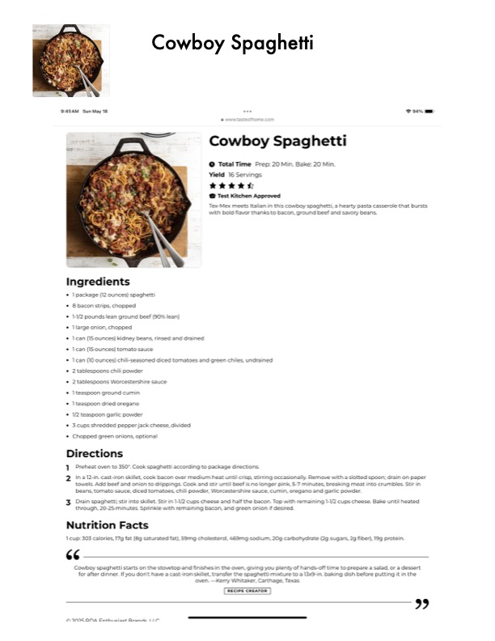

Cowboy Spaghetti

Original cookbook page 780
Ingredients
- * 1 package (12 ounces} spaghetti
- + 8 bacon strips, chopped
- * 1/2 pounds lean ground beef (90% lean)
- * large onion, chopped
- + Ican (15 ounces} kidney beans, rinsed and drained
- + Ican (15 ounces} tomato sauce
- * Ican (10 ounces) chili-seasoned diced tomatoes and green chiles, undrained
- '+ 2 tablespoons chili powder
- '+ 2 tablespoons Worcestershire sauce
- * Tteaspoon ground cumin
- + Tteaspoon dried oregano
- '+ 1/2 teaspoon garlic powder
- + 3 cups shredded pepper jack cheese, divided
- '* Chopped green onions, optional
Instructions
- Ina i2-in. cast-iron skillet, cook bacon over medium heat until crisp, stirring occasionally. Remove with a slott towels. Add beef and onion to drippings. Cook and stir until beef is no longer pink, 5-7 minutes, breaking me: beans, tomato sauce, diced tomatoes, chili powder, Worcestershire sauce, curnin, oregano and garlic powder 3° Drain spaghetti; stir into skillet. Stir in 1-1/2 cups cheese and half the bacon. Top with remaining 1-1/2 cups che through, 20-25 minutes. Sprinkle with remaining bacon, and green onion if desired. Nutrition Facts 1 cup: 303 calories, 17g fat (8g saturated fat), 59rng cholesterol, 469mg sodium, 20g carbohydrate (2g sugars, 2g f Cowboy spaghetti starts on the stovetop and finishes in the oven, giving you plenty of hands-off time to prep: for after dinner. If you don't have a cast-iron skillet, transfer the spaghetti mixture to a 13x9-in. baking dish b 'oven. —Kerry Whitaker, Carthage, Texas RECIPE CREATOR INE DNA Enthiiciact Brande 11
Recipe #780 from collection